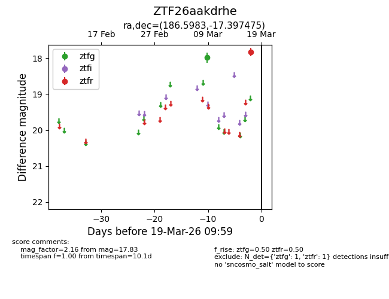
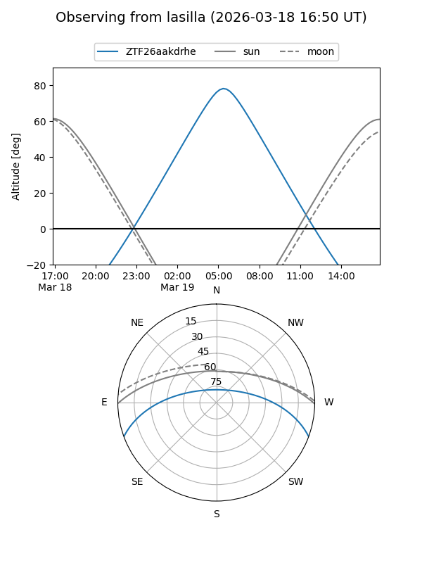
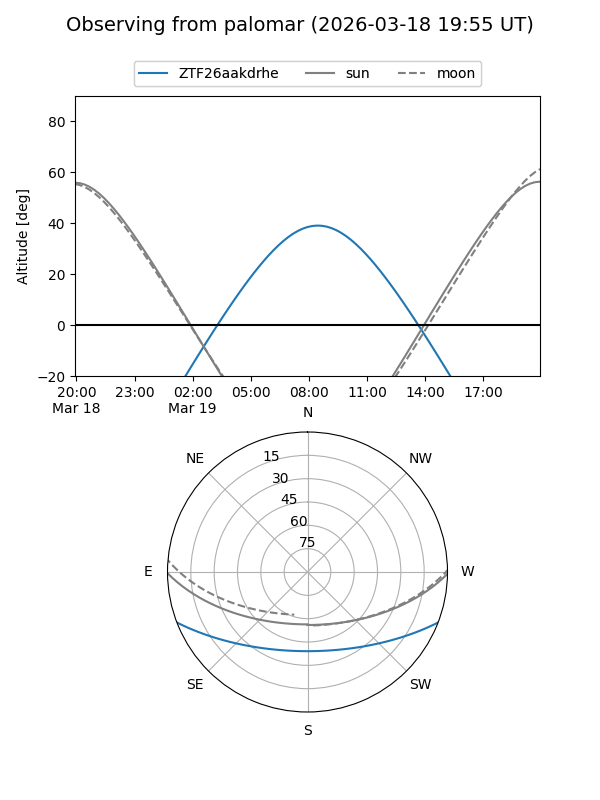

ZTF26aakdrhe
Target ZTF26aakdrhe at 2026-03-19 10:01
Aliases and brokers:
FINK: link
Lasair: link
ALeRCE: link
alt names
ZTF26aakdrhe (ztf,fink_ztf)
Coordinates:
equatorial (ra, dec) = 186.5983,-17.39748
equatorial (HMS+DMS) = 12:26:23.59,-17:23:50.91
galactic (l, b) = (294.4592,+45.06186)
Flags:
Photometry:
last ztfg=17.99, ztfr=17.83
1 ztfg, 1 ztfr detections
Lightcurve

Visibility


Additional plots